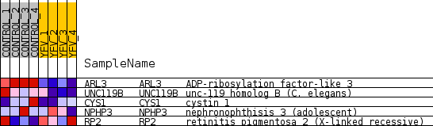
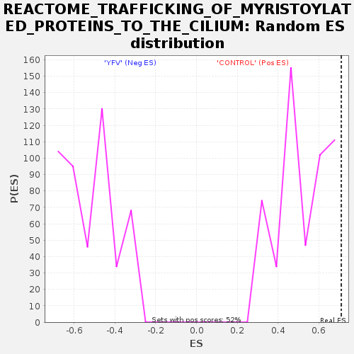

Profile of the Running ES Score & Positions of GeneSet Members on the Rank Ordered List
| Dataset | MATRIZ_GSE99081_collapsed_to_symbols.gsea_CLASE_99081.cls#CONTROL_versus_YFV |
| Phenotype | gsea_CLASE_99081.cls#CONTROL_versus_YFV |
| Upregulated in class | CONTROL |
| GeneSet | REACTOME_TRAFFICKING_OF_MYRISTOYLATED_PROTEINS_TO_THE_CILIUM |
| Enrichment Score (ES) | 0.71045315 |
| Normalized Enrichment Score (NES) | 1.3643725 |
| Nominal p-value | 0.026768642 |
| FDR q-value | 1.0 |
| FWER p-Value | 1.0 |
| SYMBOL | TITLE | RANK IN GENE LIST | RANK METRIC SCORE | RUNNING ES | CORE ENRICHMENT | |
|---|---|---|---|---|---|---|
| 1 | ARL3 | ADP-ribosylation factor-like 3 | 158 | 1.143 | 0.4611 | Yes |
| 2 | UNC119B | unc-119 homolog B (C. elegans) | 1643 | 0.503 | 0.5769 | Yes |
| 3 | CYS1 | cystin 1 | 2362 | 0.431 | 0.7105 | Yes |
| 4 | NPHP3 | nephronophthisis 3 (adolescent) | 5883 | 0.085 | 0.5288 | No |
| 5 | RP2 | retinitis pigmentosa 2 (X-linked recessive) | 12696 | -0.265 | 0.2182 | No |

